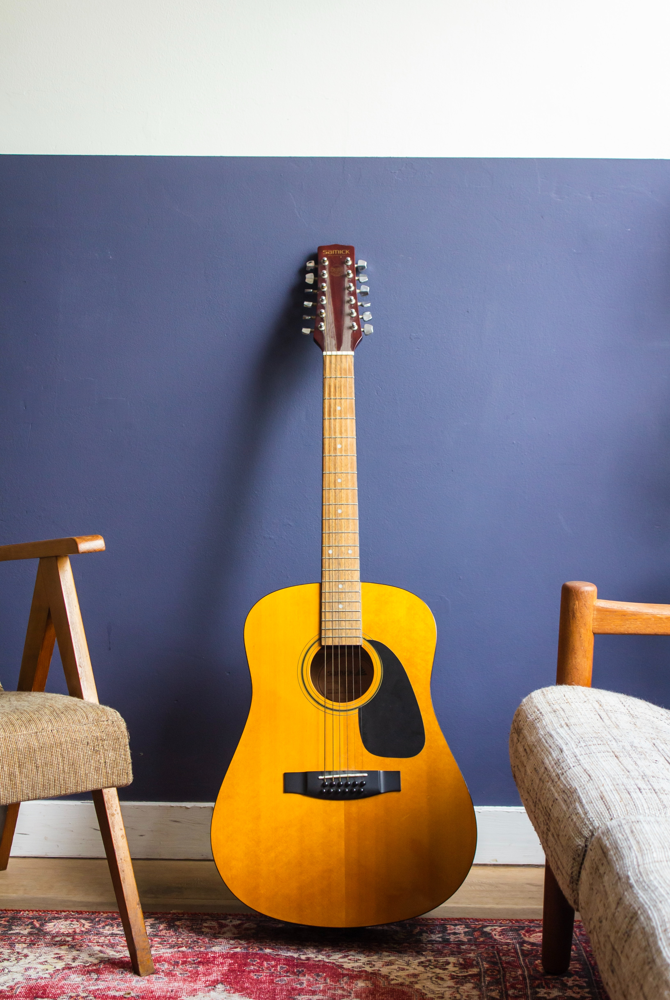

The guitar is a fretted musical instrument that typically has six strings. It is usually held flat against the player's body and played by strumming or plucking the strings with the dominant hand, while simultaneously pressing selected strings against frets with the fingers of the opposite hand. A plectrum or individual finger picks may also be used to strike the strings.
